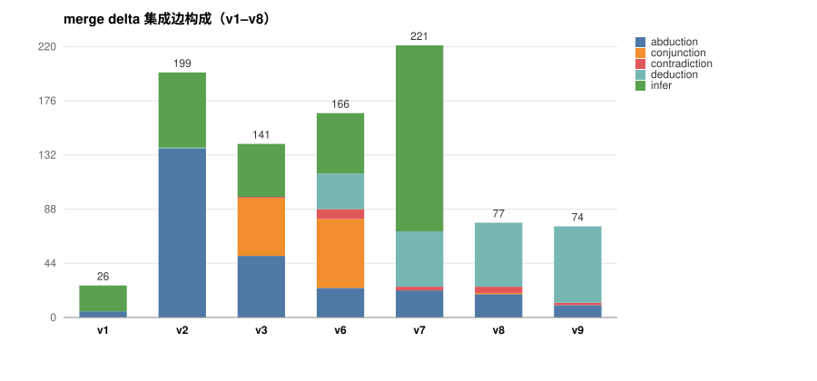

输入：test1–test5 五篇论文包，Bohr 上以 bootstrap 模式跑 Step 0–5。每一行可点开该版本的 只看集成 delta viewer（论文层已关闭）。
▶ 最终版领域图 (v9 · 结论树封口（最终）) — 完整三层视图

| 版本 | 本版改动 | delta 边 | delta 节点 | 孤立节点 | 边构成 | 结果 |
|---|---|---|---|---|---|---|
| v1 · 只锚最小包 | 基线：Step 3 检索只把最小包当锚点 | 26 | 22 | 0 | abduction 5, infer 21 | 跨论文对只覆盖 12.2%，delta 稀薄 |
| v2 · 平等池 | 每个 Package 都当锚点进同一个 claim 池 | 199 | 97 | 0 | abduction 137, deduction 1, infer 61 | 覆盖 100%，但 137 条 abduction 里 76% 形状不合法 |
| v3 · 形状校验 + relation | abduction 形状硬校验（观察→假设、单前提）；引入 relation 标签 | 141 | 73 | 0 | abduction 50, conjunction 47, contradiction 1, infer 43 | step5 编译失败：多前提 abduction 不被官方 compiler 接受 |
| v6 · A 概括观察前提 | N 条观察先概括成一个前提 A，再 A→H；加机械拼接闸 | 166 | 94 | 0 | abduction 24, conjunction 56, contradiction 8, deduction 29, infer 49 | 形状干净，但 56 条 conjunction 是把趋同误当合取 |
| v7 · 趋同汇入 K | 删 conjunction 映射，趋同证据改由领域结论 K 承载 | 221 | 161 | 0 | abduction 22, contradiction 3, deduction 45, infer 151 | K 星形涨到 151 条 infer 边（本地跑成功） |
| v8 · 多层结论树 | 结论改为多层有界总结树，方向回到文档的 `premises→Ki`，cap=8 | 77 | 67 | 0 | abduction 19, conjunction 1, contradiction 5, deduction 52 | delta 221→77；但 6/11 个 K1 只有单前提，且根只覆盖 3/11 |
| v9 · 结论树封口（最终） | 跳过单前提组；合成失败的组上提而非丢弃，保证根覆盖存活节点 | 74 | 59 | 0 | abduction 10, contradiction 2, deduction 62 | 最终版 |